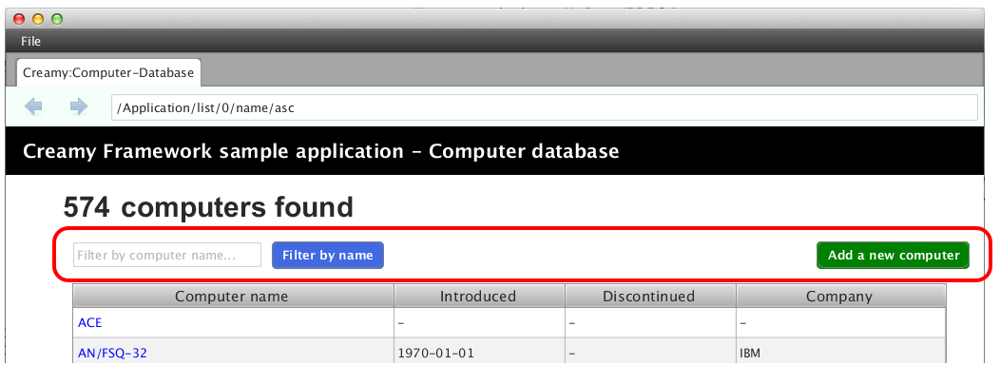

Formコントロールは、JavaFXが提供するUIコントロールを拡張したものです。
クラス名は、JavaFX UIコントロール名に ‘CF’ 接頭辞を付けたものです。
CFButton
Buttonクラスを拡張したコントロールです。name変数を保持します。
public class CFButton extends Button
CFChoiceBox
ChoiceBoxクラスを拡張したコントロールです。name変数、value変数、map変数を保持します。FromInputは、name変数、value変数のgetter、setterメソッドを定義するインターフェースです。
public class CFChoiceBox<T> extends ChoiceBox<T> implements FormInput
CFHyperlink
Hyperlinkクラスを拡張したコントロールです。method変数、path変数を保持します。method変数にはデータ送信メソッドのGET/POSTを設定し、path変数には、次の画面遷移先のパスを設定します。UnitRequestインターフェースを実装しています。UnitRequestはmethod変数、path変数を取得するメソッドが定義されています。
public class CFHyperlink extends Hyperlink implements UnitRequest
CFLabel
Labelクラスを拡張したコントロールです。name変数、value変数を保持します。FromInputインターフェースを実装していますので、これらの変数値に値を設定・取得できます。
public class CFLabel extends Label implements FormInput
CFLinkButton
Buttonクラスを拡張したコントロールです。method変数、path変数を保持します。method変数にはデータ送信メソッドのGET/POSTを設定し、path変数には、次の画面遷移先のパスを設定します。UnitRequestインターフェースを実装しています。UnitRequestはmethod変数、path変数を取得するメソッドが定義されています。
public class CFLinkButton extends Button implements UnitRequest
CFListView
ListViewクラスを拡張したコントロールです。name変数、value変数、map変数を保持します。FromInputインターフェースを実装していますので、これらの変数値に値を設定・取得できます。
public class CFListView<T> extends ListView<T> implements FormInput
CFSubmitButton
Buttonクラスを拡張したコントロールです。FormRequestインターフェースを実装しています。FormRequestは何のメソッドも定義していませんが、次画面にリクエストを送るコントロールです。
public class CFSubmitButton extends Button implements FormRequest
CFTextField
TextFieldクラスを拡張したコントロールです。name変数、value変数を保持します。FromInputインターフェースを実装していますので、これらの変数値に値を設定・取得できます。
public class CFTextField extends TextField implements FormInput
以下に挙げるクラスは、JavaFXのレイアウトクラスを拡張したCreamy Layout Paneです。HTMLのformタグにあたるもので、画面遷移先のURLを表すpath変数と、データ送信方法のmethod変数を保持します。
CFGridForm
GridPaneクラスを拡張したLayout Paneです。
public class CFGridForm extends GridPane implements Form
CFHForm
HBoxクラスを拡張したLayout Paneです。
public class CFHForm extends HBox implements Form
CFVForm
VBoxクラスを拡張したLayout Paneです。
public class CFVForm extends VBox implements Form
HTMLファイルのformタグ内にinput要素などを記述しておけば、サーバ側でそのinput要素のname属性からvalue値を取得することができます。 Formコントロールもこの考え方に倣い、name、valueメンバ変数を保持しています。
例えば、CFSubmitButtonがクリックされたとき、CFHFormに配置されたCFTextFieldのvalue値を、name値をキーに取得できます。画面遷移があるアプリケーションの場合は、そのvalue値が次の画面に自動的にバインドされます。
これらのFormコントロールは、2通りの方法で記述することができます。
Activityクラスが提供するメソッドを使って記述する方法
FXMLファイルに記述する方法
Activityクラスは、画面表示に必要なFormコントロールの描画メソッドを提供します。
JavaFXのUIコントロールは、各々のBuilderクラスを使って生成することができます。Builderクラスのメソッドは自身のBuilderインスタンスを返しますので、メソッドチェーンをつなげてUIコントロールを生成することができます。
Creamyはこの仕組みを踏襲し、Formコントロールとそれに対応するBuilderクラスを作成しました。以下の描画メソッドは、Builderクラスを返すように設計していますので、メソッドチェーンをつなげてFormコントロールを生成することができます。（一部、Builderクラスがないクラスもあります。） 記述例は、 Activity記述例 を参照して下さい。
CFGridFormの生成
public CFGridForm gridForm(String path)
CFGridFormを生成します。pathには、画面遷移先のパスを指定します。
CFHFormの生成
public CFHForm hform(String path)
CFHFormを生成します。pathには、画面遷移先のパスを指定します。
CFVFormの生成
public CFVForm vform(String path)
CFVFormを生成します。pathには、画面遷移先のパスを指定します。
CFLabelの生成
public LabelBuilder<? extends LabelBuilder> label(String text)
CFLabelを生成します。textには、表示文字列を指定します。
CFTextFieldの生成
public CFTextFieldBuilder<? extends CFTextFieldBuilder> text(String name)
CFTextFieldを生成します。nameには、name属性値にあたる文字列を指定します。
CFChoiceBoxの生成
public CFChoiceBoxBuilder<?, ? extends CFChoiceBoxBuilder> choice(String name)
CFChoiceBoxを生成します。nameには、name属性値にあたる文字列を指定します。
CFButtonの生成
public CFButtonBuilder<? extends CFButtonBuilder> button(String name)
CFButtonを生成します。nameには、name属性値にあたる文字列を指定します。
CFHyperlinkの生成
public CFHyperlinkBuilder<? extends CFHyperlinkBuilder> hyperlink(String path)
CFHyperlinkを生成します。pathには、画面遷移先のパスを指定します。
CFLinkButtonの生成
public CFLinkButtonBuilder<? extends CFLinkButtonBuilder> linkbutton(String path)
CFLinkButtonを生成します。pathには、画面遷移先のパスを指定します。
CFSubmitButtonの生成**
public CFSubmitButtonBuilder<? extends CFSubmitButtonBuilder> submit(String text)
CFSubmitButtonを生成します。pathには、画面遷移先のパスを指定します。
CFAnimationの生成
protected CFAnimation animate(Node node)
CFAnimationを生成します。nodeには、animation機能を追加するノードを指定します。
Formコントロールは、FXMLファイルにタグとして記述することができます。
画面例
次の画面は、Formコントロールを使って記述しています。
記述例① - List.vm.fxml
次は、上記画面の赤枠内を記述した例です。<CFHForm>の<childre>として、<CFTextField>と<CFSubmitButton>を配置しています。
1 2 3 4 5 6 | <CFHForm fx:id="searchForm" method="GET" spacing="10.0" alignment="CENTER_LEFT" >
<children>
<CFTextField fx:id="filter" name="filter" promptText="Filter by computer name..." prefWidth="200.0"/>
<CFSubmitButton fx:id="filterButton" styleClass="btn-primary" text="Filter by name" />
</children>
</CFHForm>
|
記述例② - List.vm.fxml
次は、<CFLinkButton>の記述例です。Add a new computerリンクボタンを配置しています。
1 2 | <CFLinkButton fx:id="createButton" styleClass="btn-success"
path="/Application/create" alignment="CENTER_RIGHT" text="Add a new computer" />
|
記述例③ - List.java
上のFXMLに対応する記述部分は以下の通りです。12行目で、searchFormの遷移先のパスを設定しています。画面のFilter by nameボタン（CFSubmitButton）をクリックすると、Applicationクラスのlistメソッドを呼び出します。このとき、<CFTextField>の設定値が渡されます。
1 2 3 4 5 6 7 8 9 10 11 12 13 14 15 16 | public class List extends AvailableActivity {
@FXML private CFHForm searchForm;
@FXML private CFTextField filter;
@FXML private CFLinkButton createButton;
:
public void initialize() {
path = Bindings.concat("/Application/list/", currentPage, "/", sortBy, "/", order);
// build search form
searchForm.addEventFilter(ActionEvent.ACTION, new EventHandler<ActionEvent>() {
@Override
public void handle(ActionEvent event) {
searchForm.setPath(path.getValue());
}
});
}
}
|
記述例④ - Aplication.java
次は、上の例のApplicationコントローラクラスの実装例です。
1 2 3 4 5 6 7 8 9 10 11 12 13 14 15 16 17 18 19 20 21 22 | public class Application extends Controller {
private Page<Computer> listComputer;
private Computer computer;
private StringProperty order = new SimpleStringProperty();
private StringProperty sortBy = new SimpleStringProperty();
private StringProperty query = new SimpleStringProperty();
//GET Aplication/list/:page/:sortBy/:order
public Result list(int page, String sortBy, String order, @Bind(key="filter") String filter) {
//this.currentPage.set(String.valueOf(page));
this.sortBy.set(sortBy);
this.order.set(order);
this.query.set(filter == null ? "" : filter);
listComputer = Computer.page(page, 10, sortBy, order, query.get());
return ok(this);
}
//GET Aplication/create
public Result create() {
computer = new Computer();
return ok(this);
}
}
|
9行目のlistメソッドは、Filter by nameボタンがクリックされたときに呼ばれるメソッドで、記述例③でsearchFormに設定された変数値path=”/Application/list/” に対応します。
18行目のcreateメソッドは、Add a new computerリンクがクリックされたときに呼ばれるメソッドで、記述例②で<CFLinkButton>に設定された属性値path=”/Application/create” に対応します。